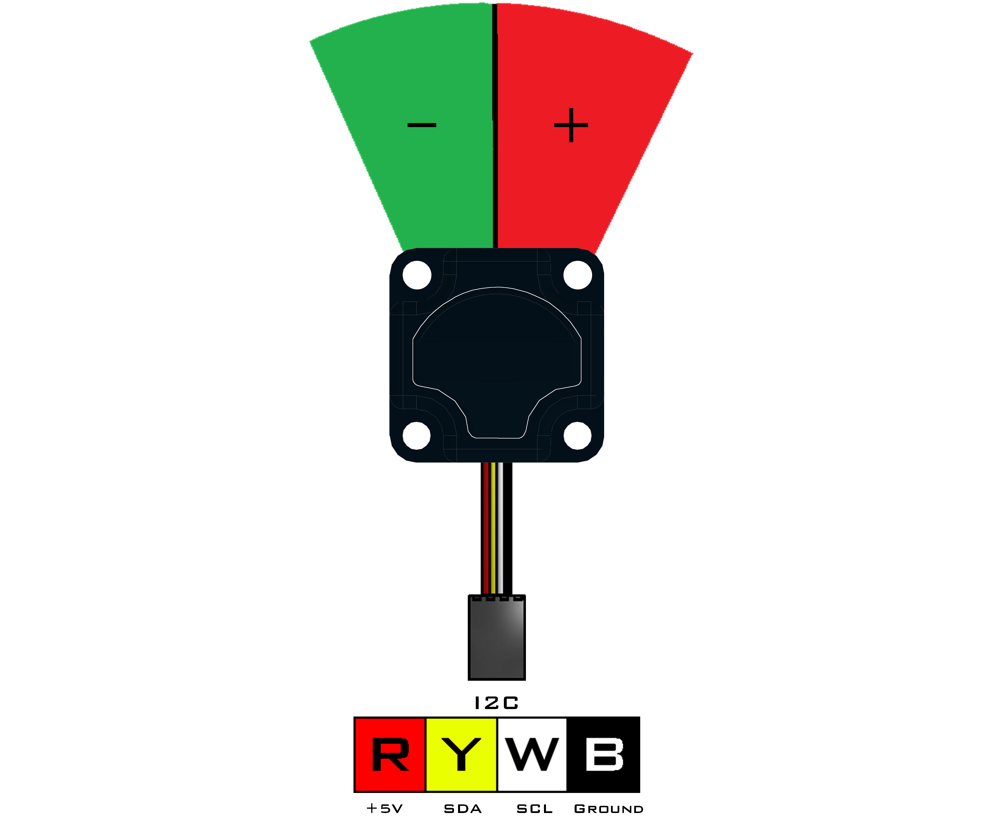

IR Seeker V3 (45-2017)
The IR Seeker V3 consists of 2 photodiodes to locate the direction and intensity of an IR source relative to the front of the sensor. The sensor can detect pulsed infrared light at 600Hz and 1200Hz with a 150° field of view. This device is compatible with all legacy IR sources such as the HiTechnic IR Ball, Beacon, and Beacon V2. Overall detection range is based on the intensity of the IR source being used. Overall detection range is based on the intensity of the IR source being used.
Sensor Type : Four Wire I2C
Default I2C Address : 0x38
Sensor ID Code : 0x49
Dimensions : 32mm x 32mm x 19mm
Mounting Holes : 24mm x 24mm
Power : 5V DC, 22mA Max
Signal Logic Levels : Logic 0 - 0V, Logic 1 - 5V
I2C Bus Speed : 100kHz max
I2C Address Change Option : Yes (Even Number 0x10 - 0xEE)
IR Seeker V3 Visual Programming BlocksList of available functions:
- Fusion.seekerV3(driver, addr)
- getHeading(frequency)
- getIntensity(frequency)
- getLeftRaw(frequency)
- getRightRaw(frequency)

Fusion.seekerV3(driver, addr)
Definition
This class contains the necessary drivers for the Modern Robotics IR Seeker V3 and must be called at the beginning of the program before using any other class functions.
Parameters
driver : Main driver object so the class can call driver functions (f)
addr : Enter an I2C address in hexidecimal if different from defaultReturns
IR Seeker V3 Object
Example
import Fusion f = Fusion.driver() seek1 = Fusion.seekerV3(f) seek2 = Fusion.seekerV3(f, 0x40)getHeading(frequency)
Definition
The heading value gives an indication of the source direction. If the value is negative, then the source is to the left of center. If the value is positive, then the source is to the right of center. The magnitude of the values gives an indication of how far off the axis the source is. If the value is 0, then the source is close to the center of the field of view.
Parameters
frequency : 600Hz or 1200Hz
Returns
Heading : int (0 - 359)
Example
import Fusion f = Fusion.driver() seek = Fusion.seekerV3(f) print seek.getHeading(1200)getIntensity(frequency)
Definition
The intensity value represents the magnitude of the receive signal. If this value is set to 0, then there is not enough infrared signal available to estimate the heading value. The value of the intensity will increase as an infrared source approaches the sensor.
Parameters
frequency : 600Hz or 1200Hz
Returns
Intensity : int (0 - 255)
Example
import Fusion f = Fusion.driver() seek = Fusion.seekerV3(f) print seek.getIntensity(600)getLeftRaw(frequency)
Definition
This function returns the infrared value read by the left photodiode. The value is dependent on both the position of the infrared source and the intensity of the source.
Parameters
frequency : 600Hz or 1200Hz
Returns
Direction : int (0 - 65535)
Example
import Fusion f = Fusion.driver() seek = Fusion.seekerV3(f) print seek.getLeftRaw(1200)getRightRaw(frequency)
Definition
This function returns the infrared value read by the right photodiode. The value is dependent on both the position of the infrared source and the intensity of the source.
Parameters
frequency : 600Hz or 1200Hz
Returns
Direction : int (0 - 65535)
Example
import Fusion f = Fusion.driver() seek = Fusion.seekerV3(f) print seek.getRightRaw(1200)If any problems arise
Contact Modern Robotics, Inc. at support@modernroboticsinc.com with a detailed description of the steps you have taken and observations you have made.
Email Subject: Fusion Python IR Seeker V3